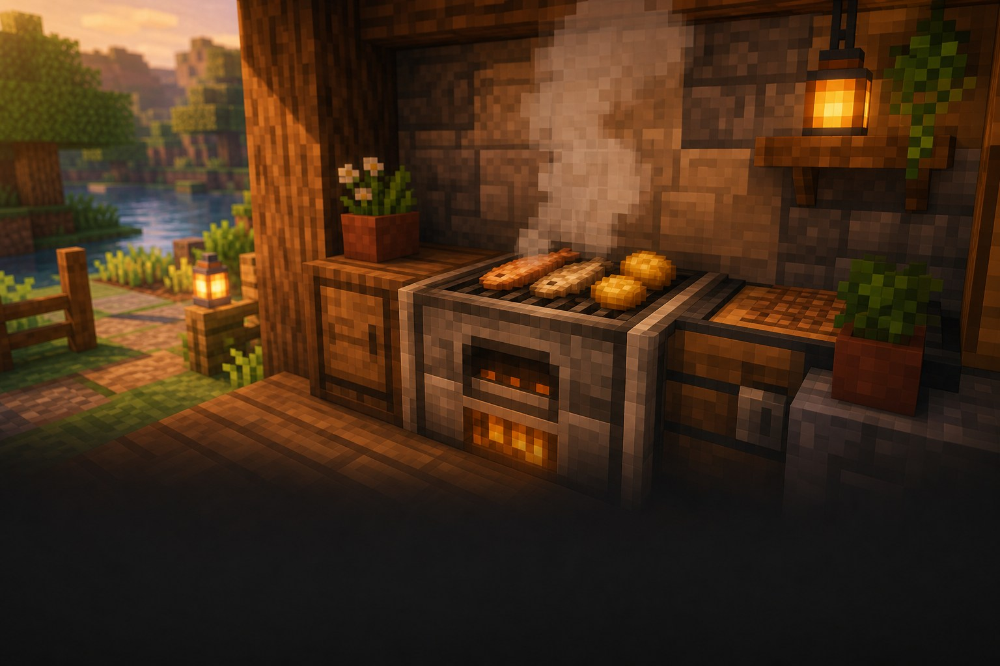

Корисне відкриття
База, що допомагає
Вечеря готова
удвічі швидше.
Коптильня готує їжу вдвічі швидше за звичайну піч.

Навіщо вона потрібна?
Після пригод треба швидко відновити їжу. Коптильня готує рибу, м’ясо й картоплю вдвічі швидше за піч.
Три прості дії
Як користуватися коптильнею
1Поклади сиру їжуМ’ясо, рибу або картоплю+
Верхня комірка — для того, що хочеш приготувати. Не клади туди руду: коптильня її не переплавить.
2Додай паливоВугілля, дерево чи інше паливо+
Паливо кладеться в нижню комірку. Коптильня витрачає його швидше, але на одну страву йде приблизно стільки ж палива, як у печі.
3Забери готову їжуПрава комірка+
Готова страва з’явиться праворуч. Забери її й вирушай у наступну пригоду не голодним.
Коптильня: як це виглядає
риба
швидше
● Підходить лише для їжі.
Підказка мандрівникові
Важливо знати
Руди не підходять
Для заліза, золота й інших руд потрібна піч або плавильна піч.
Паливо згорає швидше
Коптильня швидка, тому запас палива теж витрачається швидше.
Житель любить коптильню
Вона може стати робочим місцем м’ясника.
Маленьке завдання
Спробуй за 5 хвилин
- Постав коптильню поруч зі звичайною піччю.
- Поклади в неї сиру рибу або м’ясо.
- Порівняй, як швидко готується їжа.
★ Бонус: зроби кухню з коптильнею та бочкою для запасів.